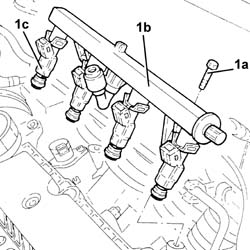

1056B60 SINGLE FUEL MANIFOLD PIPE, WITH INJECTORS - R + R
- Path
- Procedures > 10 ENGINE UNIT > 1056 PETROL INJECTION SYSTEM > 1056B MULTI-POINT INJECTION SYSTEM (MPI) > 1056B60 SINGLE FUEL MANIFOLD PIPE, WITH INJECTORS - R + R
- Kind
- repair procedure (removal / refitting; the operation number is the code)
- Applies to
- engines: 1.8 T.SPARK; all production periods
- Interactive page
- https://sloeber94.github.io/elrnDB-aGt/en/#/125002612
Applies to: engines: 1.8 T.SPARK; all production periods
 Removing
Removing
 Refitting
RefittingMake sure that the ignition key is in the OFF position, then disconnect the battery terminal (-).
Description | Connector | |
|---|---|---|
- | Battery | Vedere A1B BATTERIA ( CABLAGGI ) |
Proceed with the removal
Op. 1016A40 IGNITION COIL COVER ON CYLINDER HEAD- R+R.
Discharge the fuel supply pressure with the tool connected to the special valve located at the side of the fuel manifold pipe.
Description | Code | |
|---|---|---|
- | Rapid attachment connector | 1.870.684.000 |
1. Disconnect the electrical connections from the injectors.
Description | Connector | |
|---|---|---|
1 | Injector | Vedere N70 ELETTROINIETTORE |
2. Disconnect the electrical connection from the phase transformer solenoid.
Description | Connector | |
|---|---|---|
2 | Variable valve timing solenoid | See K98 PHASE TRANSFORMER SOLENOID |
3. Disconnect the rapid connector for the front fuel supply pipe, fuel manifold pipe side.
4. Release the front fuel supply pipe from the fastening on the air chamber.

Applies to: engines: 1.8 T.SPARK; all production periods
1. Undo the bolts (1a) and remove the single fuel manifold pipe (1b) with injectors (1c).

Applies to: engines: 1.8 T.SPARK; all production periods
Refitting
RemovingPlace the single fuel manifold pipe complete with injectors back in its housing taking care to fit the injectors in their seats pressing them down with both hands.
Tighten the two single fuel manifold pipe fixing bolts.
Fasten the front fuel supply pipe to the fastening on the air chamber.
Connect the rapid connector for the front fuel supply pipe, fuel manifold pipe side.
Connect the electrical connection to the phase transformer solenoid.
Connect the electrical connections to the injectors.
Proceed with the refitting
Op. 1016A40 IGNITION COIL COVER ON CYLINDER HEAD- R+R.
Connect the negative battery terminal (-).